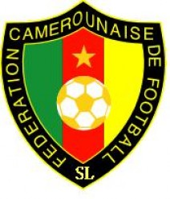

por Pedro Henrique B. N. Prado

Samuel Eto'o tem uma honra que nenhum outro jogador de futebol na história jamais teve: seu rosto é o símbolo oficial de uma Copa do Mundo. A própria Fifa admitiu que se inspirou no camaronês para criar o logo do primeiro Mundial em terras africanas. E se é ele quem estampa o convite, nada mais justo do que ser um dos principais convidados da festa.
Eto'o é daqueles poucos jogadores que chegarão à África do Sul carregando um país inteiro nas costas. Camarões deposita nos pés dele todas as esperanças de reviver seus grandes momentos na Copa do Mundo.
O atacante até já teve grandes atuações pela seleção, como o partidaço que fez na vitória fora de casa sobre o Gabão - que, no fim das contas, foi o que decidiu a suada classificação camaronesa. O problema é que nos principais torneios pelos Leões Indomáveis, aparece sempre muito tímido.
Fez apenas um gol em sete partidas pela Copa das Confederações, um gol em seis jogos nas Olimpíadas e também só um gol nas duas Copas do Mundo que disputou, em 98 e 2002. Na última Copa Africana de Nações, decepcionou: jogou mal e Camarões caiu nas quartas de final para o campeão Egito.
Em 2010, terá sua terceira chance, talvez a última, de provar que realmente merece estar entre os grandes heróis do futebol africano. A oportunidade de mostrar que seu rosto deve ser lembrado pelo que fez em campo, e não simplesmente como a cara da Copa.
Ao seu lado, terá companheiros experientes, como o ótimo goleiro Kameni, o habilidoso meia Geremi (ambos campeões olímpicos em 2000) e o atrapalhado zagueiro Rigobert Song (já com três Mundiais no currículo). Os quatro formam a base da seleção há quase uma década. Juntos, levaram Camarões ao título continental de 2002 e ao vice na última edição, em 2008. Já fizeram muito, mas costumam sempre deixar aquela sensação de que podem ir mais longe. Especialmente nas Copas do Mundo.